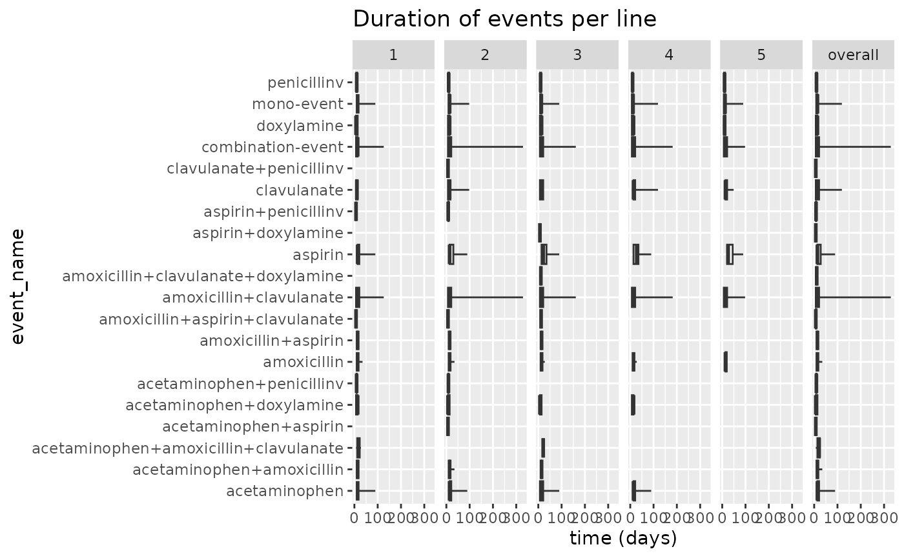
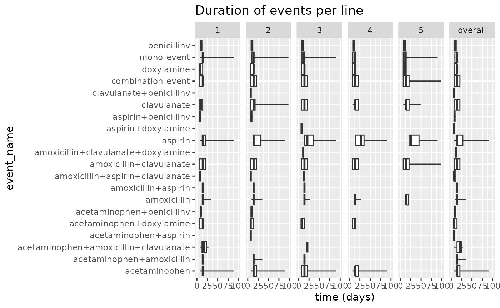

For this example we take the case of Viral Sinusitis and
several treatments as events. We set our
minEraDuration = 7, minCombinationDuration = 7
and combinationWindow = 7. We treat multiple events of
Viral Sinusitis as separate cases by setting
concatTargets = FALSE. When set to TRUE it
would append multiple cases, which might be useful for time invariant
target cohorts like chronic conditions.
##
## Attaching package: 'dplyr'## The following objects are masked from 'package:stats':
##
## filter, lag## The following objects are masked from 'package:base':
##
## intersect, setdiff, setequal, union
library(TreatmentPatterns)
cohortSet <- readCohortSet(
path = system.file(package = "TreatmentPatterns", "exampleCohorts")
)
con <- DBI::dbConnect(
drv = duckdb::duckdb(),
dbdir = eunomiaDir()
)## Downloading GiBleed##
## Download completed!## Creating CDM database /tmp/RtmpIzc63X/file2ef73feb96f7/GiBleed_5.3.zip
cdm <- cdmFromCon(
con = con,
cdmSchema = "main",
writeSchema = "main"
)
cdm <- generateCohortSet(
cdm = cdm,
cohortSet = cohortSet,
name = "cohort_table",
overwrite = TRUE
)## ℹ Generating 8 cohorts## ℹ Generating cohort (1/8) - acetaminophen## ✔ Generating cohort (1/8) - acetaminophen [367ms]## ## ℹ Generating cohort (2/8) - amoxicillin## ✔ Generating cohort (2/8) - amoxicillin [202ms]## ## ℹ Generating cohort (3/8) - aspirin## ✔ Generating cohort (3/8) - aspirin [167ms]## ## ℹ Generating cohort (4/8) - clavulanate## ✔ Generating cohort (4/8) - clavulanate [161ms]## ## ℹ Generating cohort (5/8) - death## ✔ Generating cohort (5/8) - death [126ms]## ## ℹ Generating cohort (6/8) - doxylamine## ✔ Generating cohort (6/8) - doxylamine [149ms]## ## ℹ Generating cohort (7/8) - penicillinv## ✔ Generating cohort (7/8) - penicillinv [145ms]## ## ℹ Generating cohort (8/8) - viralsinusitis## ✔ Generating cohort (8/8) - viralsinusitis [235ms]##
cohorts <- cohortSet %>%
# Remove 'cohort' and 'json' columns
select(-"cohort", -"json", -"cohort_name_snakecase") %>%
mutate(type = c("event", "event", "event", "event", "exit", "event", "event", "target")) %>%
rename(
cohortId = "cohort_definition_id",
cohortName = "cohort_name",
)
outputEnv <- computePathways(
cohorts = cohorts,
cohortTableName = "cohort_table",
cdm = cdm,
minEraDuration = 7,
combinationWindow = 7,
minPostCombinationDuration = 7,
concatTargets = FALSE
)## -- Qualifying records for cohort definitions: 1, 2, 3, 4, 5, 6, 7, 8
## Records: 14041
## Subjects: 2693## -- Removing records < minEraDuration (7)
## Records: 11347
## Subjects: 2159## >> Starting on target: 8 (viralsinusitis)## -- Removing events outside window (startDate: 0 | endDate: 0)
## Records: 8327
## Subjects: 2142## -- splitEventCohorts
## Records: 8327
## Subjects: 2142## -- Collapsing eras, eraCollapse (30)
## Records: 8327
## Subjects: 2142## -- Iteration 1: minPostCombinationDuration (7), combinatinoWindow (7)
## Records: 6799
## Subjects: 2142## -- Iteration 2: minPostCombinationDuration (7), combinatinoWindow (7)
## Records: 6663
## Subjects: 2142## -- Iteration 3: minPostCombinationDuration (7), combinatinoWindow (7)
## Records: 6662
## Subjects: 2142## -- After Combination
## Records: 6662
## Subjects: 2142## -- filterTreatments (First)
## Records: 6657
## Subjects: 2142## -- Max path length (5)
## Records: 6653
## Subjects: 2142## -- treatment construction done
## Records: 6653
## Subjects: 2142
results <- export(
andromeda = outputEnv,
minCellCount = 1,
nonePaths = TRUE,
outputPath = tempdir()
)## Wrote csv-files to: /tmp/RtmpIzc63XSaving results
Now that we ran our TreatmentPatterns analysis and have exported our
results, we can evaluate the output. The export() function
in TreatmentPatterns returns an R6 class of
TreatmentPatternsResults. All results are query-able from
this object. Additionally the files are written to the specified
outputPath. If no outputPath is set, only the
result object is returned, and no files are written.
If you would like to save the results to csv-, or zip-file after the fact you can still do this. Or upload it to a database:
# Save to csv-, zip-file
results$saveAsCsv(path = tempdir())## Wrote csv-files to: /tmp/RtmpIzc63X
results$saveAsZip(path = tempdir(), name = "tp-results.zip")## Wrote zip-file to: /tmp/RtmpIzc63X
# Upload to database
connectionDetails <- DatabaseConnector::createConnectionDetails(
dbms = "sqlite",
server = file.path(tempdir(), "db.sqlite")
)
results$uploadResultsToDb(
connectionDetails = connectionDetails,
schema = "main",
prefix = "tp_",
overwrite = TRUE,
purgeSiteDataBeforeUploading = FALSE
)##
## Attaching package: 'DatabaseConnector'## The following objects are masked from 'package:CDMConnector':
##
## dbms, insertTable## Connecting using SQLite driver
## Uploading file: attrition.csv to table: attrition## Warning: The following named parsers don't match the column names: time## - Preparing to upload rows 1 through 12## Inserting data took 0.023 secs
## Uploading file: counts_age.csv to table: counts_age## - Preparing to upload rows 1 through 63## Inserting data took 0.0347 secs
## Uploading file: counts_sex.csv to table: counts_sex## - Preparing to upload rows 1 through 2## Inserting data took 0.00851 secs
## Uploading file: counts_year.csv to table: counts_year## Warning: The following named parsers don't match the column names: year## - Preparing to upload rows 1 through 52## Inserting data took 0.00851 secs
## Uploading file: metadata.csv to table: metadata## - Preparing to upload rows 1 through 1## Inserting data took 0.00865 secs
## Uploading file: summary_event_duration.csv to table: summary_event_duration## Warning: The following named parsers don't match the column names: min, q1,
## median, q2, max, average, sd, count## - Preparing to upload rows 1 through 87## Inserting data took 0.0104 secs
## Uploading file: treatment_pathways.csv to table: treatment_pathways## Warning: The following named parsers don't match the column names: path## - Preparing to upload rows 1 through 372## Inserting data took 0.00974 secs
## Uploading file: cdm_source_info.csv to table: cdm_source_info## - Preparing to upload rows 1 through 1## Inserting data took 0.00976 secs
## Uploading file: analyses.csv to table: analyses## - Preparing to upload rows 1 through 1## Inserting data took 0.00782 secs
## Uploading file: arguments.csv to table: arguments## - Preparing to upload rows 1 through 1## Inserting data took 0.00775 secs## Uploading data took 5.91 secsEvaluating Results
treatmentPathways
The treatmentPathways file contains all the pathways found, with a frequency, pairwise stratified by age group, sex and index year.
head(results$treatment_pathways)## # A tibble: 6 × 8
## pathway freq age sex index_year analysis_id target_cohort_id
## <chr> <int> <chr> <chr> <chr> <dbl> <dbl>
## 1 acetaminophen-amoxi… 103 all all all 1 8
## 2 acetaminophen-penic… 55 all all all 1 8
## 3 aspirin-acetaminoph… 52 all all all 1 8
## 4 acetaminophen-penic… 49 all all all 1 8
## 5 acetaminophen-amoxi… 42 all all all 1 8
## 6 acetaminophen-aspir… 41 all all all 1 8
## # ℹ 1 more variable: target_cohort_name <chr>We can see the pathways contain the treatment names we provided in
our event cohorts. Besides that we also see the paths are annoted with a
+ or -. The + indicates two
treatments are a combination therapy,
i.e. amoxicillin+clavulanate is a combination of
amoxicillin and clavulanate. The -
indicates a switch between treatments,
i.e. acetaminophen-penicillinv is a switch from
acetaminophen to penicillin v. Note that these
combinations and switches can occur in the same pathway,
i.e. acetaminophen-amoxicillin+clavulanate. The first
treatment is acetaminophen that switches to a
combination of amoxicillin and clavulanate.
countsAge, countsSex, and countsYear
The countsAge, countsSex, and countsYear contain counts per age, sex, and index year.
head(results$counts_age)## # A tibble: 6 × 5
## age n analysis_id target_cohort_id target_cohort_name
## <dbl> <chr> <dbl> <dbl> <chr>
## 1 1 151 1 8 viralsinusitis
## 2 2 334 1 8 viralsinusitis
## 3 3 263 1 8 viralsinusitis
## 4 4 186 1 8 viralsinusitis
## 5 5 174 1 8 viralsinusitis
## 6 6 112 1 8 viralsinusitis
head(results$counts_sex)## # A tibble: 2 × 5
## sex n analysis_id target_cohort_id target_cohort_name
## <chr> <chr> <dbl> <dbl> <chr>
## 1 FEMALE 1092 1 8 viralsinusitis
## 2 MALE 1067 1 8 viralsinusitis
head(results$counts_year)## # A tibble: 6 × 5
## index_year n analysis_id target_cohort_id target_cohort_name
## <dbl> <chr> <dbl> <dbl> <chr>
## 1 1950 43 1 8 viralsinusitis
## 2 1951 40 1 8 viralsinusitis
## 3 1952 54 1 8 viralsinusitis
## 4 1953 47 1 8 viralsinusitis
## 5 1954 47 1 8 viralsinusitis
## 6 1955 49 1 8 viralsinusitissummaryStatsTherapyDuration
The summaryEventDuration contains summary statistics from different
events, across all found “lines”. A “line” is equal to the level in the
Sunburst or Sankey diagrams. The summary statistics allow for plotting
of boxplots with the plotEventDuration() function.
results$plotEventDuration()
Not that besides our events there are two extra rows: mono-event, and combination-event. These are both types of events on average.
We see that most events last between 0 and 100 days. We can see that for combination-events and amoxicillin+clavulanate there is a tendency for events to last longer than that. amoxicillin+clavulanate most likely skews the duration in the combination-events group.
We can alter the x-axis to get a clearer view of the durations of the events:
results$plotEventDuration() +
ggplot2::xlim(0, 100) Now we can more clearly investigate particular treatments. We can see that penicilin v tends to last quite short across all treatment lines, while aspirin and acetaminophen seem to skew to a longer duration.
Additionally we can also set a minCellCount for the
individual events.
results$plotEventDuration(minCellCount = 10) +
ggplot2::xlim(0, 100)
metadata
The metadata file is a file that contains information about the circumstances the analysis was performed in, and information about R, and the CDM.
results$metadata## # A tibble: 1 × 6
## execution_start package_version r_version platform execution_end analysis_id
## <dbl> <chr> <chr> <chr> <dbl> <dbl>
## 1 1749023349. 3.1.0 R version … x86_64-… 1749023363. 1Sunburst Plot & Sankey Diagram
From the filtered treatmentPathways file we are able to create a sunburst plot.
The inner most layer is the first event that occurs, going outwards. This aligns with the event duration plot we looked at earlier.
results$plotSunburst()We can also create a Sankey Diagram, which in theory displays the same data. Additionally you see the Stopped node in the Sankey diagram. This indicates the end of the pathway. It is mostly a practical addition so that single layer Sankey diagrams can still be plotted.
results$plotSankey()